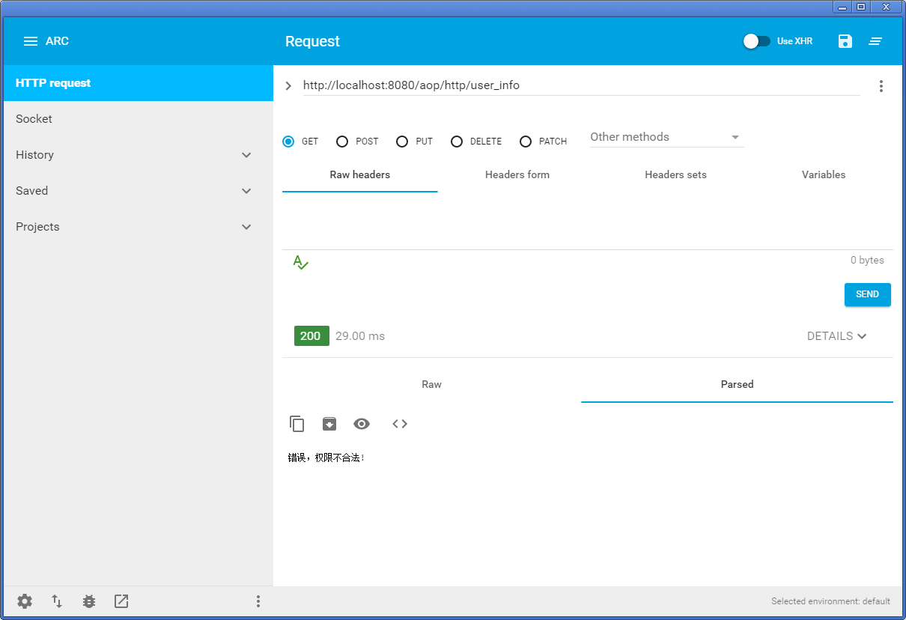
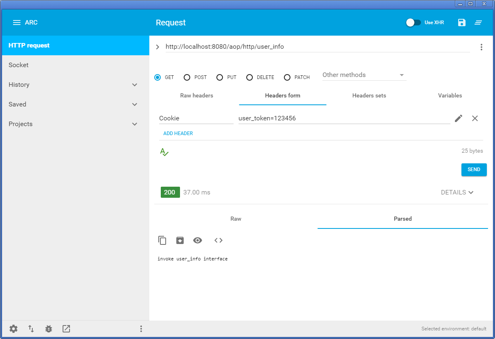

pom.xml 配置
<properties>
<project.build.sourceEncoding>UTF-8</project.build.sourceEncoding>
<project.reporting.outputEncoding>UTF-8</project.reporting.outputEncoding>
<spring.boot.version>4.3.9.RELEASE</spring.boot.version>
</properties>
<parent>
<groupId>org.springframework.boot</groupId>
<artifactId>spring-boot-starter-parent</artifactId>
<version>1.5.4.RELEASE</version>
<relativePath/> <!-- lookup parent from repository -->
</parent>
<dependencies>
<dependency>
<groupId>org.springframework.boot</groupId>
<artifactId>spring-boot-starter-aop</artifactId>
</dependency>
<dependency>
<groupId>org.springframework.boot</groupId>
<artifactId>spring-boot-starter-web</artifactId>
</dependency>
<dependency>
<groupId>org.springframework.boot</groupId>
<artifactId>spring-boot-starter-test</artifactId>
<scope>test</scope>
</dependency>
</dependencies>
HTTP 接口鉴权
需求:
需要提供的 HTTP RESTful 服务，服务会提供一些比较敏感的信息，因此对于某些接口的调用会进行调用方权限的校验，而某些不太敏感的接口则不设置权限，或所需要的权限比较低(例如某些监控接口，服务状态接口等)。
实现需求的方法有很多，例如我们可以在每个 HTTP 接口方法中对服务请求的调用方进行权限的检查，当调用方权限不符时，方法返回错误。当然这样做并无不可，不过如果我们的 api 接口很多，每个接口都进行这样的判断，无疑有很多冗余的代码， 并且很有可能有某个粗心的家伙忘记了对调用者的权限进行验证，这样就会造成潜在的 bug。
提炼一下需求:
1.可以定制地为某些指定的 HTTP RESTful api 提供权限验证功能。
2.当调用方的权限不符时， 返回错误。
根据上面所提出的需求， 我们可以进行如下设计:
- 提供一个特殊的注解
AuthChecker， 这个是一个方法注解， 有此注解所标注的 Controller 需要进行调用方权限的认证。 - 利用 Spring AOP， 以 @annotation 切点标志符来匹配有注解
AuthChecker所标注的 joinpoint。在 advice 中， 简单地检查调用者请求中的 Cookie 中是否有我们指定的 token， 如果有， 则认为此调用者权限合法， 允许调用， 反之权限不合法， 范围错误。
源码:
AuthChecker.java
@Target(ElementType.METHOD)
@Retention(RetentionPolicy.RUNTIME)
public @interface AuthChecker {
}
HttpAopAdvice.java
import org.aspectj.lang.ProceedingJoinPoint;
import org.aspectj.lang.annotation.Around;
import org.aspectj.lang.annotation.Aspect;
import org.aspectj.lang.annotation.Pointcut;
import org.springframework.stereotype.Component;
import javax.servlet.http.Cookie;
import javax.servlet.http.HttpServletRequest;
import org.springframework.web.context.request.RequestContextHolder;
import org.springframework.web.context.request.ServletRequestAttributes;
@Component
@Aspect
public class HttpAopAdvice {
@Pointcut("@annotation(me.ilcb.aop.authentication.AuthChecker)")
public void pointcunt() {}
@Around("pointcunt()")
public Object checkAuth(ProceedingJoinPoint proceedingJoinPoint) throws Throwable {
HttpServletRequest request =((ServletRequestAttributes)RequestContextHolder.getRequestAttributes()).getRequest();
// 检查用户的token是否合法
String token = getUserToken(request);
if (!token.equalsIgnoreCase("123456")) {
return "错误，权限不合法! ";
}
return proceedingJoinPoint.proceed();
}
private String getUserToken(HttpServletRequest request) {
Cookie[] cookies = request.getCookies();
if (cookies == null) {
return "";
}
for (Cookie cookie : cookies) {
if (cookie.getName().equalsIgnoreCase("user_token")) {
return cookie.getValue();
}
}
return "";
}
}
当被 AuthChecker 注解所标注的方法调用前，会执行我们的这个 advice，而这个 advice 的处理逻辑很简单，即从 HTTP 请求中获取名为user_token的 cookie 的值，如果它的值是123456，则我们认为此 HTTP 请求合法，
进而调用joinPoint.proceed()将 HTTP 请求转交给相应的控制器处理；而如果user_tokencookie 的值不是123456，或为空，则认为此 HTTP 请求非法, 返回错误。
AuthController.java（HTTP 接口）
import org.springframework.web.bind.annotation.RequestMapping;
import org.springframework.web.bind.annotation.ResponseBody;
import org.springframework.web.bind.annotation.RestController;
@RestController
public class AuthController {
@RequestMapping("/aop/http/alive")
public @ResponseBody String alive() {
return "ok";
}
@AuthChecker
@RequestMapping("/aop/http/user_info")
public @ResponseBody String callInterface() {
return "invoke user_info interface";
}
@RequestMapping("/hello")
public @ResponseBody String hello() {
return "hello";
}
}
App.java
import org.springframework.boot.SpringApplication;
import org.springframework.boot.autoconfigure.SpringBootApplication;
import org.springframework.context.annotation.EnableAspectJAutoProxy;
@EnableAspectJAutoProxy
@SpringBootApplication
public class App {
public static void main(String[] args) {
SpringApplication.run(App.class, args);
}
}
启动服务，验证下服务是否有效:
首先在 Advanced rest client 中,调用 /aop/http/alive 接口，请求头中不加任何参数：
请求 /aop/http/user_info 接口：

请求 /aop/http/user_info 接口时，服务返回一个权限异常的错误，为什么会这样呢？
自然就是我们的权限认证系统起了作用：当一个方法被调用并且这个方法有
AuthChecker 注解时，那么首先会执行到我们的around advice，在这个 advice 中会校验 HTTP 请求的 cookie 字段中是否有携带user_token字段，如果没有，则返回权限错误。
那么为了能够正常地调用 /aop/http/user_info 接口，我们可以在 Cookie 中添加user_token=123456；

方法调用日志
需求：
- 某个服务下的方法的调用需要有 log: 记录调用的参数以及返回结果。
- 当方法调用出异常时， 有特殊处理， 例如打印异常 log， 报警等。
根据上面的需求， 我们可以使用 before advice 来在调用方法前打印调用的参数， 使用 after returning advice 在方法返回打印返回的结果. 而当方法调用失败后， 可以使用 after throwing advice 来做相应的处理。
实现:
LogAopAdvice.java
import org.aspectj.lang.JoinPoint;
import org.aspectj.lang.annotation.*;
import org.slf4j.Logger;
import org.slf4j.LoggerFactory;
import org.springframework.stereotype.Component;
@Component
@Aspect
public class LogAopAdvice {
private Logger logger = LoggerFactory.getLogger(LogAopAdvice.class);
@Pointcut("within(NeedLogService)")
public void pointcut() {}
@Before("pointcut()")
public void logMethodInvokeParam(JoinPoint joinPoint) {
logger.info("---Before method " + joinPoint.getSignature().getName() + " invoke, params :" + joinPoint.getArgs());
}
@AfterReturning(pointcut = "pointcut()", returning = "retVal")
public void logMethodInvokeResult(JoinPoint joinPoint, Object retVal) {
logger.info("---AfterReturning method " + joinPoint.getSignature().getName() + " invoked, result: " + joinPoint.getArgs());
}
@AfterThrowing(pointcut = "pointcut()", throwing = "exception")
public void logMethodInvokeException(JoinPoint joinPoint, Exception exception) {
logger.info("---AfterThrowing invoke " + joinPoint.getSignature().getName() + ", exception: " + exception.getMessage());
}
}
NeedLogService.java
import org.slf4j.Logger;
import org.slf4j.LoggerFactory;
import org.springframework.stereotype.Component;
import java.util.Random;
@Component
public class NeedLogService {
private Logger logger = LoggerFactory.getLogger(getClass());
private Random random = new Random(System.currentTimeMillis());
public int logMethod(String someParam) {
logger.info("---NeedLogService: logMethod invoked, param:" + someParam);
return random.nextInt();
}
public void exceptionMethod() throws Exception{
logger.info("---NeedLogService: exceptionMethod invoked----");
throw new Exception("Somethind ba happeded!");
}
}
NormalService.java
package me.ilcb.aop.log;
import org.apache.commons.logging.LogFactory;
import org.slf4j.Logger;
import org.slf4j.LoggerFactory;
import org.springframework.stereotype.Service;
@Service
public class NormalService {
private Logger logger = LoggerFactory.getLogger(getClass());
public void method() {
logger.info("---NormalService method() invoked ");
}
}
App.java
package me.ilcb.aop.log;
import org.springframework.beans.factory.annotation.Autowired;
import org.springframework.boot.SpringApplication;
import org.springframework.boot.autoconfigure.SpringBootApplication;
import org.springframework.context.annotation.ComponentScan;
import org.springframework.context.annotation.EnableAspectJAutoProxy;
import javax.annotation.PostConstruct;
@EnableAspectJAutoProxy
@SpringBootApplication
public class App {
@Autowired
private NeedLogService needLogService;
@Autowired
private NormalService normalService;
public static void main(String[] args) {
SpringApplication.run(App.class, args);
}
@PostConstruct
public void test() {
needLogService.logMethod("xys");
try {
needLogService.exceptionMethod();
} catch (Exception e) {
// Ignore
}
normalService.method();
}
}
结果
---Before method logMethod invoke, params :[Ljava.lang.Object;@7ef2d7a6
---NeedLogService: logMethod invoked, param:xys
---AfterReturning method logMethod invoked, result: [Ljava.lang.Object;@7ef2d7a6
---Before method exceptionMethod invoke, params :[Ljava.lang.Object;@5471388b
---NeedLogService: exceptionMethod invoked----
---AfterThrowing invoke exceptionMethod, exception: Somethind ba happeded!
---NormalService method() invoked
方法耗时统计
需求:
- 为服务中的每个方法调用进行调用耗时记录。
- 将方法调用的时间戳，方法名，调用耗时上报到监控平台
可以使用 around advice， 然后在方法调用前， 记录一下开始时间， 然后在方法调用结束后， 记录结束时间， 它们的时间差就是方法的调用耗时。
实现:
ExpireAopAdvice.java
import org.aspectj.lang.ProceedingJoinPoint;
import org.aspectj.lang.annotation.Around;
import org.aspectj.lang.annotation.Aspect;
import org.aspectj.lang.annotation.Pointcut;
import org.slf4j.Logger;
import org.slf4j.LoggerFactory;
import org.springframework.stereotype.Component;
import org.springframework.util.StopWatch;
@Component
@Aspect
public class ExpireAopAdvice {
private Logger logger = LoggerFactory.getLogger(getClass());
@Pointcut("within(me.ilcb.aop.expire.*Service)")
public void pointcut() {}
// 定义 advise
@Around("pointcut()")
public Object expireTime(ProceedingJoinPoint proceedingJoinPoint) throws Throwable {
StopWatch stopWatch = new StopWatch();
stopWatch.start(); // 开始
Object retVal = proceedingJoinPoint.proceed();
stopWatch.stop(); // 结束
reportToMonitorSystem(proceedingJoinPoint.getSignature().toShortString(),
stopWatch.getTotalTimeMillis());
return retVal;
}
public void reportToMonitorSystem(String methodName, long expiredTime) {
logger.info("---method " + methodName + " invoked, expired time: " + expiredTime + " ms---", methodName, expiredTime);
}
}
Service.java
import org.slf4j.Logger;
import org.slf4j.LoggerFactory;
import org.springframework.stereotype.Service;
import java.util.Random;
@Service
public class Service {
private Logger logger = LoggerFactory.getLogger(getClass());
private Random random = new Random();
public void method() {
logger.info("---Service : method invoked");
try {
Thread.sleep(random.nextInt(500));
} catch (InterruptedException e) {
e.printStackTrace();
}
}
}
App.java
import org.springframework.beans.factory.annotation.Autowired;
import org.springframework.boot.SpringApplication;
import org.springframework.boot.autoconfigure.SpringBootApplication;
import org.springframework.context.annotation.EnableAspectJAutoProxy;
import javax.annotation.PostConstruct;
@EnableAspectJAutoProxy
@SpringBootApplication
public class App {
@Autowired
private Service service;
public static void main(String[] args) {
SpringApplication.run(App.class, args);
}
@PostConstruct
public void test() {
service.method();
}
}